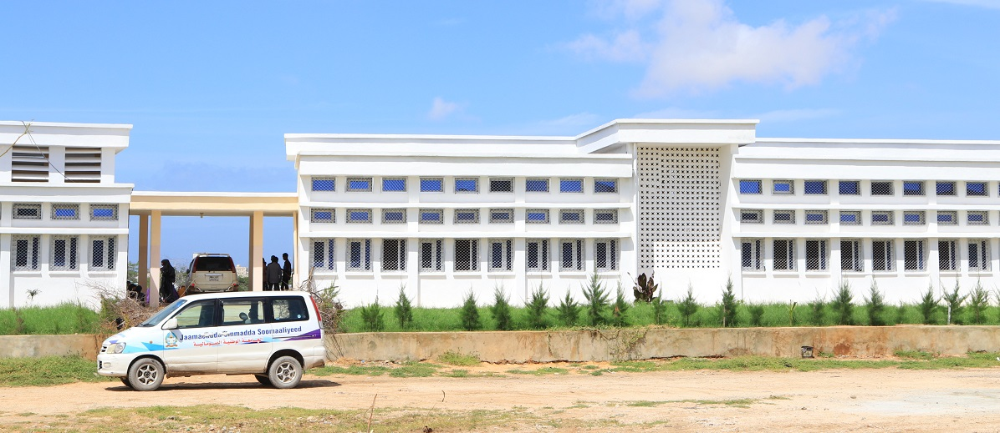
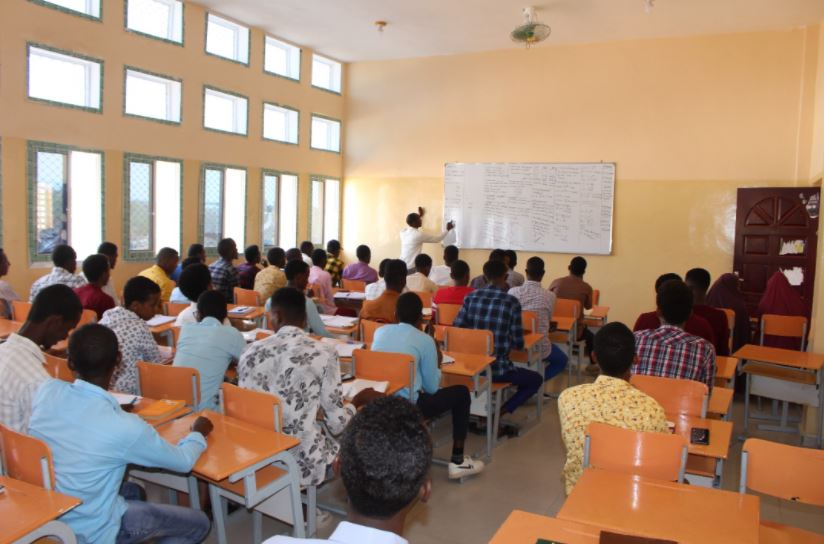

Jaamacadda Ummadda Soomaaliyeed
Somali National University
Hordhac
Jaamacadda Ummadda Soomaaliyeed (JUS) waa jamacad qaran oo muhiim ah kuna taala magaalada Muqdisho, ee dalka Somalia.
Waa jaamacaddii ugu horreysay ee heer qaran ah ee laga aasaasay dalka, waxaana lagu tiriyaa tiirarka waxbarsho ee
ugu muhiimsan dalka.
Taariikhda Jaamacadda
Jamacadda Ummadda Soomaaliyeed waxaa la aasaasay sanadkii 1954tii, iyadoo si rasmi ah u bilaawatay hawleheeda
jaamacadeed sanadkii 1969kii. Waxaan markii laga dhisay magaalad moqdisho waxaana la yiraahdaa in ay bedeshay
dugsiyadii tawabarka ee marka jiray.
waxaa ay si weyn taageero buuxda ka heshay dowladdii xilligaas taasoo xooga saaraysay sidii ay shacabka
somaaliyeed ku heli lahaayeen waxbarasho tayo sare leh.

Kulyadaha ay bixiso Jamacadda
Jaamacadda Ummadda Soomaaliyeed waxa ay bixisaa kulyado kala duwan kuwaasoo daboolaya haahiyaha
waxbarasho ee dalka, gaar ahaan kuwa muhiimka u ah hormarka bulshada iyo dhaqaalaha.
qaar kamid ah kulyadaha ay bixiso Jamacadda:
Kulliyadda Caafimaadka (Faculty of Medicine)
Kulliyadda Injineeriyada (Faculty of Engineering)
Kulliyadda Bay’adda iyo Beeraha (Agriculture and Environmental Sciences)
Kulliyadda Dhaqaalaha iyo Maamulka (Economics and Management Sciences)
Kulliyadda Cilmiga Bulshada (Social Sciences)
Kulliyadda Waxbarashada (Education)
Kulliyadda Sayniska (Science)

Gabagabo
Jaamacadda Ummadda Soomaaliyeed waa tiir-dhexaadka waxbarashada sare ee dalka, waana astaan muujinaysa halganka,
himilada, iyo horumarka aqooneed ee shacabka Soomaaliyeed. Inkastoo ay soo martay duruufo adag, haddana waxay
dib u soo noolaatay iyadoo markale u adeegaysa jiilal cusub oo doonaya inay dalkooda u horseedaan iftiin, aqoon iyo horumar.
Kulliyadaha ay bixiso jaamacaddu waa kuwo kala duwan oo daboolaya baahiyaha dhabta ah ee bulshada, taasoo ka
dhigaysa meel muhiim u ah qof kasta oo hiigsanaya mustaqbal ifaya.
Jaamacaddu waxay weli ku taagan tahay halkii laga rabay – in ay dhisto aqoonyahanno leh karti, hufnaan,
iyo waddaniyad – kuwaas oo ah furaha koboca ummadda Soomaaliyeed.